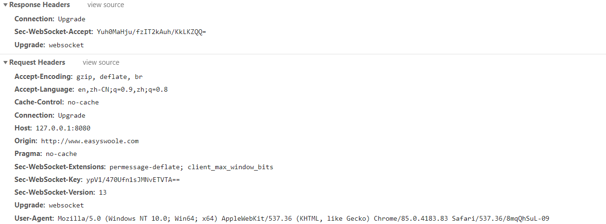
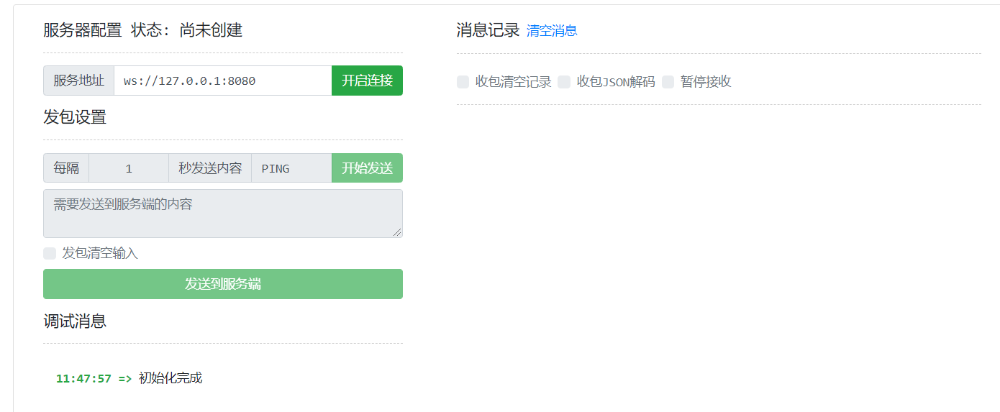
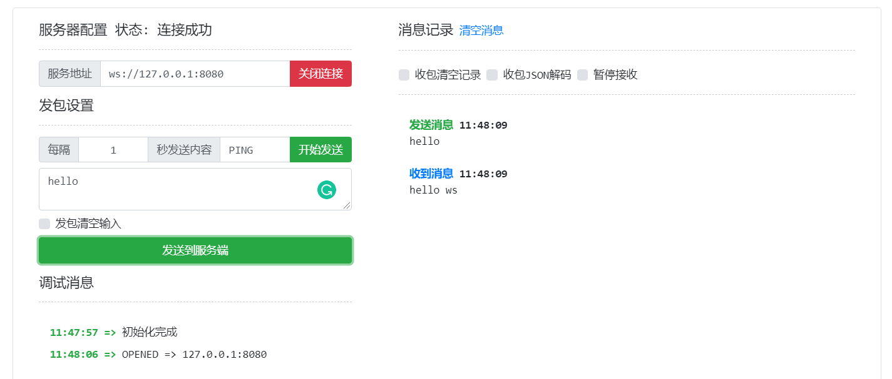

本文对应的 easy-ws 源码地址：https://github.com/killlowkey/easy-ws
WebSocket（简写：WS）是基于 TCP 连接的全双工通信的协议，WS 协议在现实场景中用的很多，比如服务端和客户端之间互相推送数据。TCP 位于传输层，来保证我们的字节流数据可以稳定传输，而 WS 是位于应用层的协议，所谓的协议就是针对不同场景而诞生的东西，说白了协议就是服务端与客户端交互的方式。
本文会基于 Java NIO 实现简易的 WS 协议，在正式开始本文之前，希望读者有 Java NIO 基础和对 WS 协议有个大致的认识，倘若你有这些基础，那么阅读本文就会事半功倍。
搭建 TCP 服务
既然我们是使用 NIO 来实现 WS 协议，那么需要使用 NIO 作为传输层，在开始之前我们先来介绍 NIO 中几个核心的概念。NIO 中有Channel、Selector、ByteBuffer 三大核心组件。Channel 可以理解为客户端与服务端建立的连接，它们之间可以相互发送消息，消息则通过 ByteBuffer 来表示，说白了 ByteBuffer 就是个消息的存储体，我们将消息用 ByteBuffer 来包裹，然后将 ByteBuffer 扔给 Channel，那么消息就发送给对方了。Selector 是不同平台多路复用的抽象，什么是多路复用呢？没有多路复用之前，一个线程对应了一个链接，这就是传统的 BIO 模式，因为我们从客户端读写数据都是会阻塞的，倘若发生了阻塞，那么这个线程也就会被休眠，就会白白浪费操作系统资源，说个大白话，就是给钱不干活。有了多路复用之后，此时一个线程可以处理多个链接，该线程只会对有状态的链接进行处理，比如从客户端接收到连接、客户端有数据过来了，这种情况线程就要干活了；倘若管理的连接没有状态，那么这个线程也就被休眠了。
如下代码所示，我们分别对 ServerSocketChannel 与 Selector 进行初始化，ServerSocketChannel 负责从客户端接收连接。第3行代码配置 ServerSocketChannel 为非阻塞的模式，倘若服务端的 Channel 是阻塞的，它是无法被 Selector 管理的。最后将服务端的 Channel 绑定监听端口，然后调用 ServerSocketChannel#register方法来为 ServerSocketChannel 注册 selector，这里的 SelectionKey.OP_ACCEPT 参数含义是只对 ServerSocketChannel 的接收连接操作进行处理。
1 | // com.easy.ws.WsServer#initServer |
ServerSocketChannel 初始化之后，我们通过一个死循环不停的接收客户端的连接。下列第2行代码，调用了 Selector#select() 方法，该方法会产生阻塞，如果当前 Selector 管理的 channel 没有新状态，那么线程会一直的阻塞在这。倘若有客户端连接过来，我们就来到了第3行代码此时会获取 SelectionKey 迭代器，然后通过一个 while 循环来遍历它，得到一个 SelectionKey 对象，这样要注意，需要调用迭代器的 remove() 方法来移除该对象，否则下次会重复处理。
然后通过 SelectionKey#isAcceptable() 来判断是否有连接过来了，从 SelectionKey 中获取 ServerSocketChannel 对象，并调用它的 accept() 方法来接收连接即可。这里还有一个关键点，因为客户端连接（SocketChannel）也是交由 Selector 来进行管理的，所以 SocketChannel 也需要配置为非阻塞模式。最后我们设置了一个 KEEPALIVE 参数，因为 ws 协议可以互相推送数据的特性，那么服务端与客户端之间需要保持一个长连接的状态，所以我们设置 KEEPALIVE 为 true。
1 | // com.easy.ws.WsServer#start |
解析 WS 协议
上一节我们搭建了一个 TCP 服务，接收到客户端连接后，那么需要从客户端读取消息，之后对该消息进行解析，来判断该数据包是否符合 WS 协议要求。
处理握手包
TCP 进行三次握手之后，此时客户端才与服务端建立了链接，倘若三次握手失败，那么则建立连接失败。同理，WS 连接的建立同样需要握手包，首先客户端向服务端发送握手包，服务端解析并处理之后返回响应包给客户端，此时一个 WS 连接才算真正建立了。
下图是 WS 连接握手包信息，类似于 HTTP 协议的请求头，首先来看到请求头 Sec-WebSocket-Key 值，这是我们握手包中最重要的东西，该值用 base64 进行编码。握手包发送给服务端之后，然后从请求头中读取该值，处理之后返回一个 Sec-WebSocket-Accept 响应头

从 SocketChannel 读取请求之后，我们会得到一个请求头，如第8行代码所示，我们会从请求头中寻找 Sec-WebSocket-Key 值，如果该请求头未找到，那么则关闭连接，说明这个请求不是 WS 连接。找到之后我们调用了 getSecWebSocketAccept(String) 方法，来生成 Sec-WebSocket-Accept 响应头。
进入该方法后，在请求头 Sec-WebSocket-Key 值后加上一个固定的 GUID（258EAFA5-E914-47DA-95CA-C5AB0DC85B11），GUID 的值是 WS 协议所规范的，得到新生成的字符串后，将该字符串进行 SHA1 加密，然后将加密的 byte 数组进行 Base64 编码，最后得到 Sec-WebSocket-Accept 值。
1 | // com.easy.ws.WsServer#handlerHandshake |
将响应头返回给客户端后，客户端就与服务端建立起了 WS 连接。因为 easy-ws 借鉴了 Netty 的 Boss-Worker 设计，Boss 线程负责从客户端接收连接，而 Worker 线程负责对客户端连接进行处理。所以成功建立起 WS 连接后，我们需要将 SocketChannel 注册到 Worker 的线程中（每个 Worker 线程都有一个 Selector），Worker 线程就可以对注册的连接进行处理了，具体的实现细节还请看 easy-ws 源码，这里就不过多赘述了。
Boss 线程只有一个，而 Worker 是有多个
1 | // com.easy.ws.WsServer#registerSocketChannel |
处理 WS 请求
SocketChannel 注册到 Worker 线程之后，那么 Worker 就可以对该连接进行处理，处理方式跟服务端逻辑相似。这样有一个坑，调用 Selector#select() 方法需要加上一个 timeout，因为 Boss 与 Worker 线程启动时间相差不大，Boss 将接收到客户端连接注册到 Worker 线程后，倘若没有加上 timeout ， 这个 Worker 线程就阻塞在这了，因为 Selector 实现问题，也就无法处理新注册的 SocketChannel，之后客户端发送了消息，Worker 线程是读取不到的。
1 | // com.easy.ws.WorkerThread#run |
当 SelectionKey 处于可读状态时，那么就调用 WsContext#handlerPayload() 方法处理即可。首先从客户端中读取数据包，之后对该数据包进行解析。
1 | // com.easy.ws.WsContextImpl#handlerPayload |
实现 WS 协议，重点在于 WS 数据包解析这块，WS 协议规范数据包第一个字节的后4位代表消息类型，第二个字节是消息的长度，这个字节减去 128 处于 0-125 之间，那么该消息长度是该减去后128值（举个例子，第二个字节值为132，减去128得到4，此时4在0-125 之间，那么该消息长度是4个字节）。如果该值是 126，那么第3、4字节（short）是消息长度；该值是127，第3-10 字节（long）是消息的长度。随后四个字节是消息加密的密匙，用于解密消息，每次 WS 请求的密匙都是不同的。
这里说的字节都是无符号的，Java 的字节是有符号的，所以需要进行与运算得到无符号字节
以下内容摘取 rfc6455 规范：https://datatracker.ietf.org/doc/html/rfc6455#section-5.2
1 | 0 1 2 3 |
OpCode 值代表消息类型
- %x0：denotes a continuation frame
- %x1：文本数据
- %x2：二进制数据
- %x3-7：are reserved for further non-control frames
- %x8：连接关闭
- %x9：PING
- %xA：PONG
- %xB-F：are reserved for further control frames
了解 WS 协议规范后，我们就开始对数据包进行解析，首先对消息类型进行解析，我们向 parseFrame(byte) 方法传入一个 byte，之后这个 byte 与（&） 0xFF 得到无符号 byte，然后在与（&） 0xF，得到该无符号字节的后四位（OpCode），知道 OpCode 也就知道消息的类型了。
1 | parseFrame(data.get()) |
随后解析消息的长度，我们先拿到数据包的第二个字节，该字节与上 0xFF 之后，得到一个无符号的 byte。再跟 128 进行异或运算（达到减去128效果），之后根据该 flag 进行进一步的解析，如果该值小于 125 那么直接返回即可，等于 126，那就获取之两个字节转为无符号 short 返回，等于127 获取后8个字节直接返回即可。
1 | // com.easy.ws.WsContextImpl#getPayloadLen |
知道消息的类型和长度后，那么我们要进行最重要的一步，对消息进行解密操作。首先从数据包获取四个字节的消息密匙，再从数据包中获取指定消息长度的数据，然后进行解密操作，看到下列代码 21 行，数据的每个字节（无符号）都与密匙指定位置字节（无符号，根据要解密数据索引来计算指定位置的密匙字节）进行异或运算，得到解密的数据。
此时我们对 WS 请求数据包解密就大功告成，对解密后的数据处理完成，就可以响应给客户端。
有读者会产生疑问，从 ByteBuffer 获取数据时，没有看到读取数据包指定位置的数据呢？这是 ByteBuffer 特性，每使用 get 或 getXX 方法获取数据，其 ByteBuffer 偏移量都会根据对应读取的字节数更新。
1 | // com.easy.ws.WsContextImpl#decode |
处理 WS 响应
rfc6455 规范的 section-5.7 部分给出了几个响应数据包例子，下面例子大致可以将响应分为 明文、加密、分段 三类，我们响应数据时，数据包第一个字节是一个标志位，与我们解析请求数据包相同，该字节的后四位代表 OpCode，也就是消息类型，第二个字节是消息的长度，倘若我们传输的是加密数据，那么长度后面四个字节是加密的密匙。在例子3中给出响应数据分段，如果我们要响应 Hello 文本数据，将 Hello 分为 “Hel” 与 “lo” 两段数据，第一段数据包第一个字节响应 OpCode ，后面跟着 Hel 长度，最后是 Hel 内容；第二段数据包第一个字节是明文数据包第一个字节的前四位（一般是0x80），后面是分段数据的长度和内容。
例子1、2、3 仅仅用于传输小于 125 个字节的数据，如果我们传输的字节大于125呢？例子 5、6给出了示例，不知读者还记得上文中我们是如何解析请求数据包长度的，如果第二个字节减去128 等于126那么消息长度是 一个无符号 short，等于127 消息长度是一个 long 类型。
以下内容摘取 rfc6455 规范：https://datatracker.ietf.org/doc/html/rfc6455#section-5.7
- A single-frame unmasked text message
- 0x81 0x05 0x48 0x65 0x6c 0x6c 0x6f (contains “Hello”)
- A single-frame masked text message
- 0x81 0x85 0x37 0xfa 0x21 0x3d 0x7f 0x9f 0x4d 0x51 0x58 (contains “Hello”)
- A fragmented unmasked text message
- 0x01 0x03 0x48 0x65 0x6c (contains “Hel”)
- 0x80 0x02 0x6c 0x6f (contains “lo”)
- Unmasked Ping request and masked Ping response
- 0x89 0x05 0x48 0x65 0x6c 0x6c 0x6f (contains a body of “Hello”, but the contents of the body are arbitrary)
- 0x8a 0x85 0x37 0xfa 0x21 0x3d 0x7f 0x9f 0x4d 0x51 0x58 (contains a body of “Hello”, matching the body of the ping)
- 256 bytes binary message in a single unmasked frame
- 0x82 0x7E 0x0100 [256 bytes of binary data]
- 64KiB binary message in a single unmasked frame
- 0x82 0x7F 0x0000000000010000 [65536 bytes of binary data]
为了降低实现难度，esay-ws 采用明文传输方式，下面的 write 方法中接收一个 WsPayload 对象，该对象包含了响应的消息类型、消息长度。我们将数据包分为两段进行传输，第一个段写入数据包的元信息（metadata），第二段写入消息的内容。如第6行代码所示，首先我们为元数据分配10个字节的空间，倘若我们传输的消息长度是一个 long ，那么消息长度占用8个字节，响应数据包第一个字节是一个标志位，第二个字节是关于消息长度的，所以整体加起来不会超过10个字节。
第14行代码，我们写入数据包第一个字节，这里用 0x80 来跟 OpCode 进行或运算，因为第一个字节前4位几乎是固定的，我们只需要与 OpCode 进行组合即可。接下来判断消息长度，如果小于 125 那么直接将消息长度转为无符号 byte写入即可；倘若在 126 - 无符号 short 之间，那么先写入 0x7E 标志位在写入消息长度（无符号 short）；如果在无符号short - long 之间，那么写入 0x7F 标志位，最后写入该消息长度。
因为响应数据包使用 ByteBuffer 来存储，这里需要调用 ByteBuffer#flip 方法将 ByteBuffer 设置为可写模式，最后调用 SocketChannel#write(ByteBuffer) 方法将元信息和消息内容写出即可。调用 SocketChannel#write 方法后，数据不会立即到达客户端，而是先将数据复制到了内核缓冲区，具体发送时机是由操作系统决定的，可能我们元数据和消息内容会组合成一个数据包一起发送给客户端。
1 | // com.easy.ws.WsContextImpl#write |
运行 WS 服务
在上文中，我们实现了解析握手包、请求数据包、响应数据包功能，这几个核心功能构成了一个简易的 WS 服务器。然后运行 WS 服务进行测试一下，首先传入 8080 监听端口给 WsServer，之后调用其 setWsCallback 方法设置一个 WsCallback 回调来处理信息，倘若客户端与服务端建立起链接，那么会调用 WsCallback#onOpen 方法；当接收消息到消息会调用 WsCallback#onMessage；连接关闭时，则调用 WsCallback#onClose ；最后调用 WsServer#start() 方法启动 WS 服务即可。
下面代码是联系不到上下文的，具体的代码，还请看到 easy-ws github：https://github.com/killlowkey/easy-ws
1 | public class WsServerExample { |
启动 WS 服务后，我们访问 http://www.easyswoole.com/wstool.html 进入WebSocket 在线测试工具，在服务器地址输入栏中输入 ws://127.0.0.1:8080 ，然后点击开始连接，客户端就与服务端建立起 WS 连接。

成功建立起 WS 连接后，会在服务端控制台输出 “成功与 /127.0.0.1:61437建立起 ws 链接” 信息，在在线测试工具中，“开始连接” 按钮变成了 “关闭连接”。此时就发送内容到服务器，输入内容，点击发送到服务端按钮，会收到服务端响应的 “hello, ws”信息。

参考文档
尾语
本文并未涉及 easy-ws 设计细节，从而出现读着读着就联系不到上下文情况。由于篇幅的原因和简化实现 WS 协议难度，不可能对所有的细节面面俱到，只能覆盖解析 WS 协议一些重要的步骤。同时本文并未实现一个完整的 WS 协议，具体的实现细节还请读者自行探究，本文只是起到一个抛砖引玉的作用。